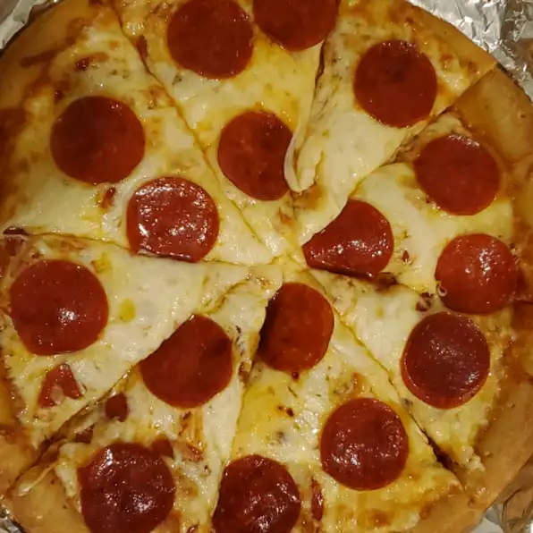

Pizza
Go back

Description
Quick, Easy and Delicious-Homemade pizza crust and tomato sauce has never been easier
and this recipe for pepperoni pizza produces a delicious classic!
- Prep: 25 mins
- Bake: 18-20 mins
- Servings: 6
Ingredients
- ½ (12 ounce) can CONTADINA® Tomato Paste
- 1 teaspoon dried oregano, crushed
- 1 teaspoon dried basil, crushed
- ½ teaspoon garlic powder
- ½ teaspoon onion powder
- ½ teaspoon sugar
- ½ teaspoon salt
- ¼ teaspoon black pepper
- 3 ¼ cups all-purpose flour, or more as needed
- 2 (.25 ounce) envelopes FLEISCHMANN'S® Pizza Crust Yeast or RapidRise® Yeast
- 1 tablespoon sugar
- 1 ½ teaspoons salt
- 1 ⅓ cups very warm water (120 degrees F to 130 degrees F)
- ⅓ cup oil
- 1 (6 ounce) package HORMEL® Pepperoni
- 1 cup shredded mozzarella cheese, or more to taste
Steps
- Step
For sauce: Combine all sauce ingredients with 1/2 cup water in a medium bowl; set aside for flavors to develop while making crust. Freeze remaining paste .
- Step
For crusts: Combine 2 cups of flour with the dry yeast, sugar and salt. Add the water and oil and mix until well blended (about 1 minute). Gradually add enough remaining flour slowly, until a soft, sticky dough ball is formed.
- Step
Knead for about 4 minutes, on a floured surface, until dough is smooth and elastic. Add more flour, if needed. (If using RapidRise® Yeast, let dough rest, covered, for 10 minutes.)
- Step
Divide dough in half. Pat each half (with floured hands) into a 12-inch greased pizza pan OR roll dough to fit pans.
- Step
For pizzas: Preheat oven to 425 degrees F. Top crusts with sauce, pepperoni and cheese.
- Step
Bake for 18 to 20 minutes until crusts are browned and cheese is bubbly. For best results, rotate pizza pans between top and bottom oven racks halfway through baking.
Go back